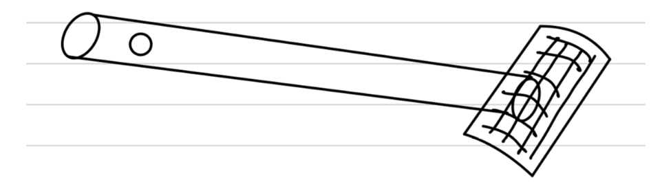
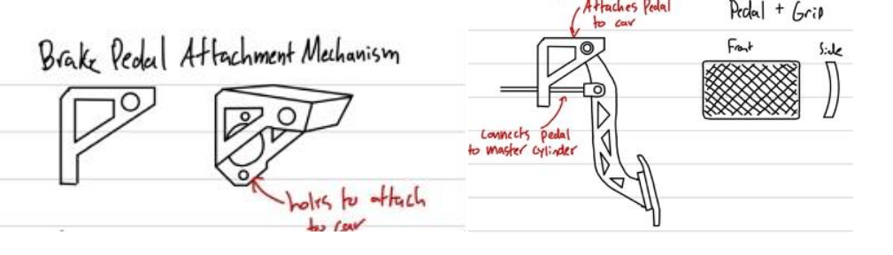

January 2024
Project Overview
This project focused on designing and prototyping a lightweight yet durable brake pedal
for the Queen’s Baja SAE off-road vehicle. The pedal needed to withstand 2000 N of
force, integrate with the hydraulic master cylinder, and securely mount to the frame.
Using SolidWorks and FEA, we optimized the geometry by introducing
triangular and circular cutouts that reduced mass by nearly 20% while maintaining
strength and safety. The final design uses 1045 high-carbon steel for its excellent
stiffness and endurance, with a 6:1 pedal ratio for improved braking efficiency. A
cost-effective prototype was 3D printed and mounted for testing, meeting both
performance and budget constraints.

• Design a brake pedal capable of withstanding at least 2000 N of applied force.
• Ensure compatibility with the hydraulic master cylinder and mounting frame.
• Optimize the geometry to reduce mass while maintaining stiffness and strength.
• Select a material that balances durability, manufacturability, and cost.
• Incorporate ergonomic considerations for driver comfort and control.
• Prototype and validate the design through simulation (FEA) and physical testing.
• Stay within budget constraints while meeting SAE competition requirements.
We began with hand sketches and ergonomic mockups to define the pedal profile and driver foot placement.
Multiple design concepts were developed and compared for manufacturability, weight reduction, and strength.
The most promising candidates were then modeled in SolidWorks with parametric dimensions,
allowing rapid adjustments to pedal length, thickness, and cutout geometry.
Mounting holes and fastener positions were carefully placed to align with the hydraulic master cylinder and chassis frame,
ensuring proper clearances. Fillets were added throughout the pedal body to reduce stress concentrations and improve fatigue
resistance under repeated braking loads.


Design Validation & Prototyping
To ensure the brake pedal design met all performance and competition requirements, we conducted both finite element analysis (FEA) and physical prototyping. FEA was performed in SolidWorks to validate the pedal under extreme loading conditions, constraining the hinge point where the pushrod connects to the master cylinder and applying a 2000 N braking force at the pedal face. The results confirmed that the 1045 high-carbon steel pedal could withstand the load with a factor of safety between 3–4, while maintaining minimal deflection for reliable stiffness. A topology optimization study further reduced mass by 20% — from ~0.55 kg to ~0.44 kg — without compromising strength or performance.
To translate the digital design into a tangible component, the final model was 3D printed using PLA filament. This low-cost prototype enabled us to verify geometry, ergonomics, and fitment with chassis mounting points, as well as visualize the master cylinder connection. After assembling and presenting the prototype, along with our design process and FEA validation, to the Baja SAE team captains and course professors, we received confirmation that the design met all functional criteria, was manufacturable within team resources, and offered a cost-effective solution ready for full-scale production.
| Component | Material |
|---|
| Brake pedal shaft | 1045 high carbon steel |
| Brake pedal attachment mechanism | 1045 high carbon steel |
| Brake pedal grip | Rubber |
| Master cylinder connection rod | 1045 high carbon steel |
The final brake pedal design demonstrated strong performance across all key metrics and met Baja SAE competition standards. Iterative development and validation ensured the component could safely withstand a 2000 N braking force with a factor of safety of 3–4, while strategic material selection and topology-driven cutouts reduced weight by 20% without sacrificing strength or stiffness. A functional 3D-printed prototype confirmed proper fit, ergonomics, and integration with the chassis, and the final concept was approved by both team leadership and faculty as a manufacturable, competition-ready solution.
We are looking forward to next steps which include:
• Fabricating the pedal in steel to fully validate the performance under real loading.
• Conducting physical testing with strain gauges or load rigs to confirm the FEA predictions.
• Exploring alternative materials or heat treatments to reduce weight further while maintaining safety.
• Integrating the pedal into the full braking system for vehicle-level testing and driver feedback.
• Refining manufacturability to ensure the part can be reliably produced within the team’s resources.